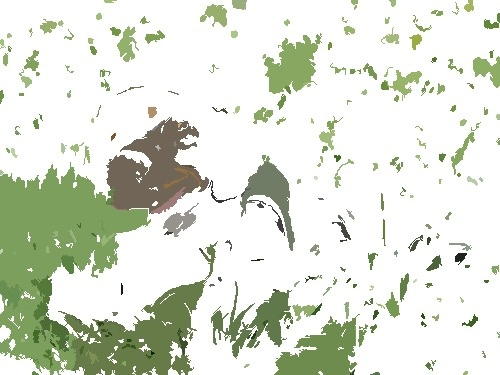
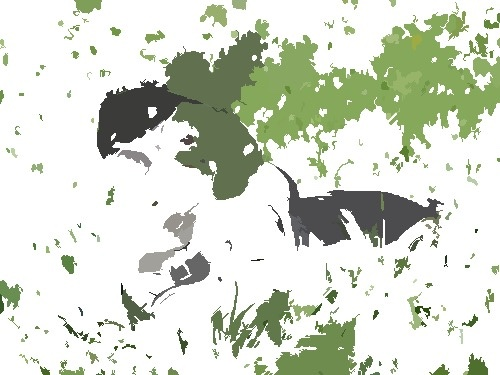
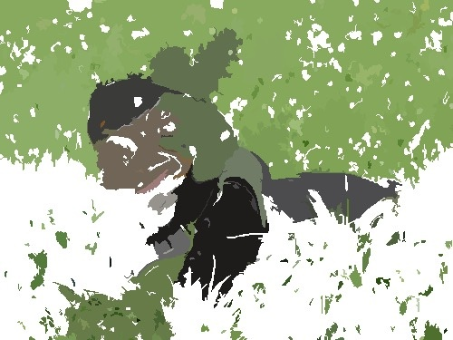
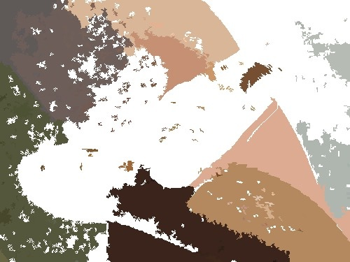

About LIME
LIME (Local Interpretable Model-agnostic Explanations) approximates a complex model locally by using perturbed inputs (i.e. slightly modified versions of the original data) and training an interpretable model to explain the predictions of the complex model in the neighbourhood of a particular data point.
There are numerous variations in the implementation of LIME. For instance, linear models can be utilized as interpretable models, but decision trees are also a viable option. Additionally, there are various approaches to feature selection, which is an integral part of generating the explanation.
The JML package is based on the LIME package, which implements different variations of LIME in Python. For the JMLXAIProject package it was decided to follow the recommendation from this paper, i.e. Ridge Regression is used as the interpretable model and Lasso for feature selection.
How does the code implements LIME for Image Input:
1 Create super pixels for the input image through segmentation
The aim of LIME is to generate an interpretable explanation, the first step is to calculate the input image in super pixels.
| Original input | Output |
|---|---|
 |  |
2 Create different disturbed versions of the super pixels input image
Using a mask (a binary vector), the super pixels can then be faded in and out, 1 means super pixel is shown, 0 means no colour value, thus generating an interpretable representation of the image.
| super pixels input | disturbed versions 1 | disturbed versions 2 | disturbed versions 3 |
|---|---|---|---|
|  |  |  |
3 Predict the class probabilities of disturbed images with classificator
4 Calculate distance of features of super pixel image and disturbed images
5 Calculate Explanaition - calculate weights of each superpixel:
- kernel function is applyed on the calculated distances used as weights
- normalize features and labels using weights
- select n features with lasso
- calculate ridge regression model as simplified model with selected features and distance weights
- create a vector with the length corresponding to the number of features, in place of the selected features store their ridge regression coefficients, the other entries are 0